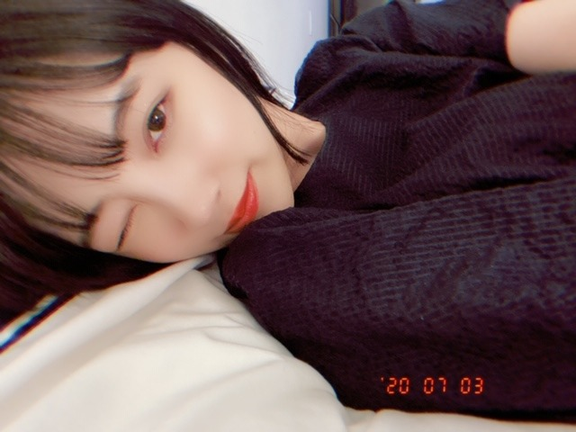

2020/0704Satシンプルる
こんばんは
堀未央奈です(^.^)
相変わらず歌詞を見ながら
曲を聞くのにハマっています
やはり好きなのは
YUIさんのwhy?という曲の
"どうして人は言葉を持ったのだろう？
心が見えにくくなる"という歌詞
心が見えるのも
心が見えないのも
言葉ないのも
言葉あるのも
どっちにしても難しいってこと
色々考えさせられますね、
RADWIMPSさんの猫じゃらしの
"この言葉ばかりに頼り切った日々が
名もない世界の鍵を閉めたんだ"
もすきだなぁ
みなさんの好きな歌の好きな歌詞はありますか？




無地の服がおおいです
シンプルです
何もかもシンプルがいいです
みなさんに質問
安定か挑戦
どちらが好きですか？
では(^.^)
2020/07/04 18:00


コメント(475)
僕はどっちかっていうと曲の雰囲気よりも歌詞に共鳴してその楽曲を好きになるタイプの人間です。もちろん曲を聴いて一発でハマることもありますがね。
そういう意味ではZARDさんなんかはほとんどの曲の歌詞が好きですね。曲として耳だけで聴くと文節が「ん？」って感じのものもあるんですが、歌詞を見ると納得してさらに心に沁みてきます。あとは今でも好きだけど特に90年代頃のドリカムさんの歌詞も大好きですね。
年齢的(47歳)なものか、未央奈ちゃんからの「オススメの曲は？」的な問いかけにはどうしても90年代の曲を答えることが多くなっちゃいますね。でもその頃の歌は今で僕の心のバイブルですから(笑)。ぜひ未央奈ちゃんにも聴いてほしいな。
どちらかと言うと挑戦かな(*´ω｀*)
それが難しくて「安定」かな……。
安定がいいけど、挑戦も捨てがたいな
その時々によって安定か挑戦かどちらを選ぶか違うよ
みおなかわいい
希望はやっぱり安定かなぁ？
が、しかし❗
中卒で少しだけ健常者より劣る部分があるから常に何かに挑戦してるよ
プロボクサーのライセンス取得したし、独学でTOEICも875点まで到達したんだ
友達には「何を目指してんの？」って、よく聞かれるけど、頭脳と肉体の限界はどこにあるんだろう？ どこまで行けば自分は納得出来るんだろう？ と言うのが俺の答えかなぁ？
なんか、格好つけてるみたいだけどまだ25だし歳とってから後悔したくないもんね❗
だから今は「挑戦！」あるのみです
「そんな暑がりと そんな寒がりが
一緒に住むから 愛と呼べるんだ」
が大好きです。
安定
パネル展まだかなー
楽しみだよー
安定より挑戦が好きです。昨日も行ったことのないスーパー行ったら思ってたより品揃え良くて楽しめました笑
さてさて、やっぱり挑戦がいいと思います。大小にかかわらず、挑戦し続ける事は大事だと思います！！
安定と挑戦
両方のバランスが大事なのかなぁ
人によってそのウェイトは違ってくるだろうし・・・
自分はネガティブなのでほとんど挑戦はしないというか出来ない。笑
未央奈ちゃんがいろいろチャレンジしているのを見ると自分も頑張らねばと思うし、いつも勇気をもらってるよ。
早起きしたんだ！そりゃ眠いよね～でも1日を長く体感出来る気がするから得したね！＼(^o^)／(多分！)
お腹なってるのかー？食べる暇がないのかな。。
だれか、お菓子でもなんでもあげてーw
でも俺はお腹ぐぅぐぅなるたびに今、自分は生きてるんだなーとかって思ったことあったよw
身体が何か食い物、栄養を入れてくれ～って訴えてるみたいな( *・ω・)ノ
そして、今日の自撮りも可愛いし最高ー♪(^^)
ただ、俺はチョキ✌️を出しましたけどねフッw
挑戦
でも未央奈の方がもっと好き
心と言葉。それぞれを歌った曲がたくさんありますね。
小田和正さんの『between the word & the heart ー言葉と心ー』という曲の歌詞が好き。
"見えないところで傷ついて ひとりで涙を流さないで"
"すべてあなたの言葉にして 伝えてそのまま ためらわないで"
"どんなに小さな声でも きっといつもきいてるから"
心が傷ついたときに言葉にすることの大切さ、それをきいてくれる人の存在、そういうことを考えながら聴くとさらに心にしみます。
蒸し暑い季節、シンプルな服は見ていて心がすっきりする感じ。とてもすてきです。
挑戦もいいけれど、その気持が湧くのは心や周りの環境が安定しているときではないのかなと。安定が生む挑戦がいいなあ。
ではまたコメントします。今週も元気にいきましょう。
さらばだ、また会おう！（気球に乗って去りぬ〜）
こんな言葉を聞いたことがある
苦労も努力も、立ち塞がる壁さえも、楽しめる人こそが最強
乃木坂の皆さんは、辛い時でもなんだかんだ笑顔を忘れていない
だからこそ素敵な今につながっているのかなと思う
最近の堀ちゃんは、とても楽しそうで、乃木坂でいる日々を楽しんでいる
そんな堀ちゃんを見ると、とても嬉しくなります
今を楽しむ、今しかできないことをやる
これこそが最強！
これからも堀ちゃんが笑顔でいられることを願ってます
お目覚めが早いもので笑
早起きするのは良い事だけど眠くなっちゃうの
どうかしたいね！
お腹が減っては戦は出来ぬだぞ
安定させるのも大変なことだよね
安定も挑戦のひとつだと思ってます
・好きな歌詞 「木枯し紋次郎」のテーマ。上條恒彦さんの「だれかが風の中で」 敢えて内容は書きませんがこの歌詞とドラマとはセットで。
心が（で）見える、見えないもの、言葉の（が）あるなし。もしよろしければ「木枯し紋次郎」中村敦夫主演の特に1-20話まで（新シリーズはいまいち）のドラマの中に感じ取れるものが有るかもしれませんよ。
・安定か挑戦か 挑戦を継続しない限り安定はない。安定を感じたら「隙」が生まれる。そう考えます。また人それぞれですので他人の批判はしませんが，一言、
安定など望むべくもなくひたすら瞬間瞬間、挑戦し続けることでしか生きられない方々もいらっしゃると思います。
固い文章ですみません。蒸し暑さの中どうぞお元気でいてください。
大丈夫や頑張れって歌詞に苛立ってしまったそんな夜もあった。
って好きではないのですが共感出来て。
頑張ってる人に頑張れってゆーのは失礼だなと思い言わなくなりました。
シンプルこそベストですね!
堀ちゃん自分は挑戦派です。
ではまたコメントおじゃまします♪
ブログ更新ありがとうございます
私は、安定も良いですが、時には挑戦かなぁ✨
答えになってないですね
未央奈ちゃんは自分らしさをだして行って欲しいです✨
頑張ってね✨
最近、また増えて来ましたので、体調気を付けてください❗
そうそう、今回の写真も可愛いですが、前回のブログの写真とても好きです✨
またもやモバメありがとう！
レコメンかぁ、確かに惜しいよねー。
まゆたんもすごい良いんだけどね、やっぱ未央奈に出てほしいとみんな思ってると思うよ(´・ω・`)
せめて隔週とかでもまた復活してほしいなー。それかいっそ新しくレギュラー始まってくれたら嬉しいな！
未央奈のラジオ声が聴き心地良いから好きなんだよね♪
と、とうもろこしそんなに食べてるんだねw(￣▽￣;)
皮って完全には消化されないみたいだから食べ過ぎは注意だよー。お腹にたまって気持ち悪くなっちゃうんだと思う。
美味しくて食べちゃうの分かるんだけどね！w
お、車で一緒にお出かけですかー。
ふたりとも良い表情しとるね☆
ブログ更新、ありがとうございます♪
好きな歌の好きな歌詞。
う〜ん、いっぱいあり過ぎますね(笑)。
全て書こうとすると大変なことになるので(笑)、テーマを絞っていくつかピックアップしようと思います‼︎
未央奈が好きな『why?』と『猫じゃらし』の歌詞と共通点があるものにしようかな♪
1つ目は、plentyさんの『人との距離のはかりかた』から。
『言葉にするだけ無駄かもな でも言葉にしなくちゃダメだよな』
言葉ってとても便利で、上辺だけで美辞麗句を並べることもできる。
それだけに、心の底から出た言葉であっても、なかなか伝わらなかったり、信用されないことも多い。
だからといって、言葉なんてそんなものだと諦めてしまったら、それで終わってしまう。
伝わりきらないことは分かっていても、なんとか伝えようとする気持ちも大事っていうことかなって思います♪
2つ目は、RADWIMPSさんの『最大公約数』。
『君が想うこと それは同時に僕が想うこと
そんな奇跡は必要ないよ タダであげるって言われても
パパとママが 心だけは隠して生んでくれたのには
それなりの理由があった』
気持ちを共有するとか、気持ちを分かち合うとか、すごく聞こえが良くて格好いいけど、実際は、人の心というのは簡単には見えない。
むしろ、そんな簡単に見えないからこそ、公約数のように二人の気持ちがぴったり一致した時に、ものすごい感動が訪れる。
お互いの気持ちが分からないことに不安を覚える必要はない。
『言葉』と『心』の関係は、本当に難しいですよね。
疑って、信用して、裏切られて、救われて、そんなことを繰り返しながら、折り合いをつけていくしかないのかもしれません。
ええと、それから、『挑戦』と『安定』ですね。
ありきたりですが、自分は『挑戦』ですかね。
自分の過去を振り返った時、『挑戦』と『安定』の選択を迫られた何回かあって。
結果的に、『挑戦』を選択した時の方が後悔がない気がします。
やっぱり、心の奥底では『挑戦』をしたい自分がいて。
でも自分の理性的な部分が『それって勝算あるの？』って囁いて、葛藤することが多くて。
『挑戦』を避けてしまうと、理屈抜きで、あとあと『あの時挑戦しておけば、今ごろは…』って考えてしまう。
そんなに悶々とするなら、失敗しようが何だろうが、挑戦しておいた方が、自分も納得するかなって思うんです♪
ただ、自分がそう考えるのは、今、ある程度安定した生活を享受できているからかもしれないな、とも思います。
挑戦して多くのものを失ってしまった人や、現在不安定な生活を余儀なくされている人は、そんなに軽々しく『挑戦することが素晴らしい』とは言えないかもしれない。
そう考えると、正解はないのかもしれませんね♪
長くなってしまいました。
自然災害とかウイルスとか、次々と困難がやってきますが、めげずに頑張っていきましょう‼︎
ではでは、また。
明日も未央奈にとっていい1日になりますように♪
土台となることは安定が良いけど趣味とかは
挑戦しても良いかな～(^-^)
自分は緑黄色社会さんの
♪Mela！の
「手を取ってくれないか？
ギブとテイクさ」という歌詞が
大好きです！
もし良かったら聴いてみて！
堀ちゃんの最近あげてくれる
写真がめちゃめちゃ好きです！
これからもあげていって欲しいです！
難しい質問だね〜！笑
自分はここは挑戦！っていうとこと
いやいや安全にいこ！って
分けてるかなぁー
自分にとって今後生かせれる
ことには挑戦しがちです！
堀ちゃんはどうなのかな？
次回の更新も楽しみにしてますよ〜！
では！体調1番で！
おやすみおな〜！！
最終的に安定したいから、挑戦する。でも終わりがないから、延々、挑戦し続けないといけないという・・・(T . T)
人は矛盾を抱えた生き物なのですね。
コメント遅れてゴメン
写真上げてくれてありがとう！
インスタも見てるよ〜！
自分は挑戦したいけど選べない安定の人です笑
これからも応援してるよ！
体調には気をつけてね！
by未央奈推しのブラックコーヒー
こんばんはー！
堀未央奈さん♪
おぉー、YUIさん！
聴いてこよっと
うーん。考えちゃう。
猫じゃらし 大好きー！
そこもいいよねー。ピアノの伴奏が好き。
この曲の歌詞ぜんぶ好き。笑
騒ぎ立てるほど不幸じゃない毎日 とか
ある朝アラームに笑われた気がした とか
触れるくらいの幸せ抱っこして とか
背負えるくらいの悲しみおんぶして とか
好きすぎる。。なんだか心が穏やかになる。。
いぇい✌︎
シンプルの服買ってこよっと！
よよよ。
質問！
安定か挑戦かー。
安定が好きなんだけど、気づいたら挑戦してる人！笑
本能では挑戦が好きなのかも。笑
理想の自分に近づきたいって気持ちは常に持ってるよん(^-^)
では！☺︎
好きな歌詞、たくさんありますが堀ちゃんが書いてくれたフレーズを見てパッと思い出したのが
SUPER BEAVERさんの「ことば」という曲の
「ことばだって信じたい あなたならば信じるよ」
というフレーズです、曲としてもめちゃくちゃ好きな1曲です( ´ ▽ ` )♩
曲を通して「言葉より心を信じている」と歌っていますが、結局は言葉と心がどうであろうと「あなた」を信じてるんだ、という気持ちを最後のワンフレーズでぶつけてくるところが好きです！
自分がこう想えるか想いたいかは別として、ひたすら真っ直ぐに想っている気持ちが現れている歌詞に惹かれることが多いですね(^^)
今でもときどき歌詞を見ながら聴いています、覚えているけど歌詞を見ながら曲を聴きたいときってあるります、よね？堀ちゃんはどうですか？( ´ ▽ ` )
曲調も好きなので、よかったら堀ちゃんにも聞いてみてほしいです(o^^o)
安定か挑戦のどちらが好きか、難しいですが、世間一般のイメージの安定と挑戦であれば、僕の答えは「安定」です(^^)
好き、というと少し語弊はあるかもしれませんが、いま大事にしたいのは安定です( ´ ▽ ` )
今の自分の周りを見渡してみて、友達などの人間関係はもちろん大事にしたい
そして、自分の好きなことをこれからも好きでいたい、それを好きになった自分の感性を今後も保っていきたい、そう思っているから、安定を大事にしたいのかなと思っています(o^^o)
未来も大事だけど、今は今を大切にしたいです( ´ ▽ ` )
ただもちろん、1人の人間として前進したい、現状を少しでも良くしたい気持ちもあるので、ある程度の安定を持った挑戦というのはこれからもしていきたいとも思っています(^^)
人生は0か100ではないはずですし、安定を保ったまま30を得られる挑戦もあるので、それを積み重ねていきたい、みたいな( ´ ▽ ` )
そして覚悟を持った挑戦をしてる人は応援したくなります
だから「好き」なのは挑戦なのかもしれません…ごめんなさい、あやふやな回答で(>_<)
ここでも0か100の選択をしない本心が表れている気がします笑
とにかく「大事にしたいのは安定」という答えでお願いします！笑
こうやって堀ちゃんから問いかけしてくれるの嬉しいです、実直に答えたいから自分を見つめ直す時間になっています( ´ ▽ ` )笑
僕は会社とかでは気を遣っちゃいますし、この頃は友達とも会えていないので、最近はこのコメントで1番素の自分として言葉を表している気がします笑
堀ちゃんのこともたくさん知りたいですし、もし目に留まったら僕のことも知ってください！(o^^o)笑
では！またコメントさせてくださいー！
歌詞にストーリーがあるのも素敵だけど、「言葉」が持つ"無意味さ"と"大切さ"。対極だけどその両方を教えてくれました！！
知っているかも知れないですが、トウモロコシを食べすぎると、一時的にお肌がかなり黄色くなるそうですよ。笑
(^o^)
CRYSTALより
可愛い、大好き！！私は挑戦かな。
でも安定も時には必要だなと思う。
それではまた！！
未央奈ちゃんはどっち？
乃木中など見ていると安定より挑戦思考に見えるけどどうですか？
モバメについて。
プティくんは車に乗ってる時写真を
撮らせてくれるくらい大人しいんですね。
僕は以前、実家で柴犬を飼ってました。
名前は小次郎。その子を車に乗せる時は
暴れ回るので1人横についていないと
乗せられなかったです。
小次郎を車に乗せる時は遠くに散歩に
出かける時か動物病院に行く時。
車のドアを開けるとピョーンと勢いよく
乗ってワクワクしてるのが簡単に分かる程
はしゃぎます。ここは変わりません。
ただ小次郎はとても賢かったので
目的地別で態度がガラリと変わります。
散歩に行く時は終始ワクワクして
暴れ回ってたけど、動物病院に行く時は
露骨にイヤイヤという態度で暴れ回って
ました。
どっちか車外の景色を見るだけで分かる
んですよ。注射が嫌だったのかな、
とにかく動物病院が嫌いな子でしたね。
おかげで動物病院でも暴れ回るので
診察が終わるとすぐに僕と一緒に出て
自宅まで5キロくらいありましたが
散歩して帰るというのが定番でした。
とにかく嫌だったんでしょうね。
もちろん自宅に着く頃には車は先に到着
してるんですが、それすら待てなかった
ようです。
なんか話が逸れてしまいましたね。
プティくんは大人しくていいなぁという
思いだったけど、昔の事を思い出したら
止まらなくなりました。
では。
誇らし（何視線だよ）
私も元気にトウモロコシ食べるるる＾－＾
♪猫じゃらし♪ってタイトル気になる
こそばゆい感じなのかな？
何でだろ？って思いながら聞いてみるね♫
乃木坂の好きな歌詞たくさんで選べないので
私も他のアーティストさんの曲で
～好きな歌詞をご紹介～
(
あなたに会うと ときめきさえも
うまく言葉に出来ないけど
恋心さえ 隠したままで
チョットずるくなったかな
目的よりも プロセスによって
歴史は塗り変えてきたらしい
全ての恋も 仕事もみんな
本当はマニュアルの外
太陽よりも 強い引力のような crazy love
*******************************************
(
そしてまた緑が深く 記憶の扉 開いていった
たんぽぽが咲いた小道で
あなたと手と手 つないでみる
時は笑えたり 笑わなかったり 悲しみの雨降ってみせたり
気まぐれな神様のする いろんな事に慣れていっても
無邪気な事で笑いたい
あなたとアンテナつながってたい
夢のようなDays だけど夢じゃなく この胸の中のリアル
*******************************************
最近の曲だと。。。
歌詞に登場する『バベルの街』を調べて、意味を理解すると
...ロマンティック（＊＾－＾＊）
*******************************************
ファッションもインテリアも落ち着くシンプルが好きだよ。
安定が好きだけど、今は挑戦する気持ちを大事にしたいなぁ。
曲の歌詞ってすごく感動するよね！
でも、僕は、いまだに、アナスターシャの
歌詞の意味がわかりません。
どうしたらいいでしょうか？
もやもやしてます。
すいません、ずるい解答で…
スマホの通知にmiona_horiのアドレスが表示されるといつもテンションあがってる(゜▽゜*)
へぇ！その風景を見て天気の子見ようと思ったんだ！さすが天気の子好きの未央奈だね！(*￣ー￣)
もしかしたら、もう10回ぐらいみたりしてるんじゃないー？
見すぎて透明化しないでね。
俺は今日は朝から仕事してて、さっき終わってから少し寝てて、それで起きてからコメントしてるとこだよー(^^)d
このあとは夜にUVERの配信ライブがあるからそれを見るよ！めっちゃ楽しみなんだー＼(^-^)／
そういえば先月も配信あったんだけど、久しぶりに美影意志を歌ってくれたんだよ。未央奈知ってるよね？
乃木坂のライブもだけど、好きなアーティストの定番の盛り上がる曲も最高に良いだけど、普段あまり披露しない珍しい曲をやってくれると嬉しいんだよね！( ・∇・)
年齢を重ねると安定にも魅力を感じるけどね。
2極のようで2極でない気がします
僕自身は何かと新しいモノコトに目が向いてしまう 新しモノ好きなところがあるので フラフラグラグラしないように いろんな意味で(安定も含め)ベースが大事だぞ！と 自分に言い聞かせる必要があります。
これは個人的に思うだけなんですが...
「言ってることが違うじゃないか！」っていうのは 男に多くて、比べて 女性は根本的(本能的?)な考え方が安定してる印象があります だとすると "挑戦"に向いているのは女性の方なのでは？と思ったりもします。 男性女性を分けて考える必要はないんですけど...
なんかよくわからない文章になりました。ごめんなさい
堀ちゃんは文学的というか哲学的な歌詞が お気に入りなのかな。 1つのブログで 2つも難題を投げかけてくる堀ちゃん...
"良い 歌詞 って何だろう? " も 考え始めたら 眠れません
(うそをつきました。6時間寝ました...)
コメントする